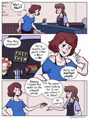

0
Tesla has begun offering public rides in Austin in its purpose-built Cybercab, a two-seat robotaxi with no steering wheel or pedals. "You can go outside, take rides," said Ashok Elluswamy, Tesla's VP of AI. "Anyone can take rides. It's open to the entire public." Previously, the fleet consisted only of Model Ys.
Texas records show Tesla had registered 45 Cybercabs as of Thursday, though the company has not disclosed how many are currently carrying passengers. Tesla also says it eventually wants consumers to be able to buy the vehicles for under $30,000. Business Insider reports: Videos posted online by Tesla influencers and content creators who were invited to the Austin event showed that the Cybercab can be hailed through the Robotaxi app. In a video posted by David Moss, an autonomous-vehicle content creator, Robotaxi users could open the car's butterfly doors through the app. After the riders enter the car, the doors closed automatically, Moss said in the video. The launch comes nearly two years after Tesla first unveiled the Cybercab at its "We, Robot" event in Burbank, California.
Read more of this story at Slashdot.
An anonymous reader quotes a report from The Hill: Sen. Bernie Sanders (I-Vt.) and Rep. Greg Casar (D-Texas) are calling for a permanent ban on the development and deployment of artificial superintelligence, citing a series of recent hackings involving "rogue" models. The bicameral duo announced Thursday they will introduce the Ban Artificial Superintelligence Act, which would institute the permanent ban, along with temporarily pausing "advanced AI development" until federal regulators establish safety standards. The bill would also direct the U.S. to "pursue international agreements to prevent superintelligence from being developed anywhere in the world" and establish a new Cabinet-level federal agency focused on AI safety rules.
Superintelligence refers to AI technologies that will surpass the smartest humans. Several technology leaders, including OpenAI CEO Sam Altman, have suggested superintelligence is on the horizon. The legislation would also set new penalties for any person or company trying to circumvent the ban, including the corporate death penalty, in which a court forces a company to shut down. Individual developers could also face up to 20 years in prison, the lawmakers said. "Nearly every day, there is a frightening new story about how Big Tech companies are losing control of the technology they are developing, with potentially cataclysmic results," Sanders wrote in a press release.
"The leaders of the major AI companies publicly acknowledge that they do not fully understand the technology and that it is escaping their control. It is irresponsible for society to allow them to move forward and make these products even more advanced."
Casar emphasized AI's fast development, writing in a statement, "In just four years, we have gone from the first version of ChatGPT to AI models so powerful they cannot be properly controlled."
Read more of this story at Slashdot.
ChatGPT, Claude, Grok, and Gemini all suffered significant service disruptions within roughly the same few-hour window Thursday morning. OpenAI and Anthropic reported elevated errors and later restored service, while Grok remained impaired and third-party monitoring indicated a likely Gemini outage despite no public acknowledgment from Google. Ars Technica reports: Other major Internet services, including Amazon Web Services, Microsoft Azure, and Cloudflare, have not reported any major issues as of press time Thursday, though issue reports on DownDetector did spike somewhat for all three this morning.
While the affected frontier models go down occasionally, having all four experience interruptions in the same short period is practically unheard of. Claude reports 99.4 percent uptime for its services over the last 90 days and last reported a similar three-hour "partial outage" on August 24. OpenAI reports 99.63 percent uptime for ChatGPT and 100 percent uptime for ChatGPT Codex in the same period. ChatGPT's so-called "Work Mode" reported an hours-long period of "elevated latency" on August 31.
Read more of this story at Slashdot.
Microsoft is imposing monthly limits on Xbox Cloud Gaming starting in November, with Game Pass Ultimate, Premium, and Essential subscribers getting 15, 10, and 5 hours respectively before they have to buy additional playtime. "Currently, Game Pass subscribers can stream without these monthly hour limits," notes IGN. From the report: The change means those who use cloud gaming most via Game Pass will end up having to pay more, although Microsoft said this impacts 4% of Game Pass subscribers. Also in November, Microsoft said players will be able to buy cloud playtime hours through the Xbox Store and 'stream eligible games they own on supported devices' without subscribing to Game Pass.
In a blog post, Microsoft said it was making the changes because the cost of providing cloud gaming has grown as more people use it and play for longer. The monthly limits, Microsoft continued, will mean it can invest in reliability and performance. But it said it understood that for some players the practical result is a higher cost.
Read more of this story at Slashdot.
OpenAI has released GPT-6 Astra, a new model that president Greg Brockman called a "generational leap" and suggested may represent the arrival of AGI. "I think it might be about this model," Brockman said in a briefing with reporters. He ended the briefing by saying: "Welcome to the AGI era." Axios reports: Astra pushes AI agents closer to doing complex professional work on their own -- while also raising questions about how safely they can be deployed. OpenAI said that Astra was built on its largest-ever training run, using more than 100,000 GPUs at its Stargate site in Texas.
The company also said this is its first model to use other models in a significant role in supervising Astra's training.
GPT-6 Astra will first be available to a limited set of organizations in OpenAI's Daybreak Access program and will be available "in the coming days" for ChatGPT Plus, Pro, Business and Enterprise customers and API developers.
OpenAI said earlier this week that Astra would be released soon, but that its most powerful cybersecurity capabilities would remain limited to a small group of trusted testers. Astra is the first model OpenAI has designated as reaching its "critical" cybersecurity threshold under its preparedness framework -- meaning it can potentially find and exploit previously unknown vulnerabilities across well-protected systems without step-by-step human guidance. OpenAI previously slowed Astra's release to add safety testing after determining that its cyber capabilities could reach the critical threshold. Further reading: OpenAI's New Reasoning Technique Alarms AI Safety Experts
Read more of this story at Slashdot.
Nvidia has launched PAIR, a free open-source tool that links compatible computers on a home network so they can pool idle processing power for local AI inference and agentic workloads. "While the compatible devices are mostly Nvidia GeForce GPUs (PAIR works with RTX 20-series cards and newer, as well as RTX Pro GPUs and DGX Spark systems), Apple's M4 chips or newer will also work," reports The Verge. From the report: The key thing here is that PAIR uses your in-home systems when they're idle to avoid interfering with other tasks. And this disaggregated system of computers can work in parallel to chew through lots of processing requests -- which should be helpful for an agentic workflow that breaks complex tasks into smaller jobs. This should prevent large bottlenecks on a single GPU, and Nvidia says PAIR can adapt as devices join or leave the network -- including if a user does something like start playing a game on their desktop PC.
[...] Nvidia says PAIR is secured by pairing all devices through a six digit code and then securing the channel via mTLS (Mutual Transport Layer Security), to create an encrypted communication line that's trusted in both directions between computers. The Nvidia PAIR beta is available today, with support for Windows, Linux, and macOS.
Read more of this story at Slashdot.
An anonymous reader quotes a report from TechCrunch: OpenAI's new Astra model will use a reasoning technique called "recurrent depth" that allows it to operate outside of the sequential thinking that characterizes most reasoning models, The Information reported on Tuesday. This technique, also called "opaque recurrence," will likely make the model's chain of thought more difficult to monitor -- and that has AI safety experts rattled. While Astra's use of the technique is reportedly limited, its emergence has still raised significant concerns among AI safety experts.
"I am extremely concerned by the reporting that Astra uses opaque recurrence," wrote Redwood CEO Buck Shlegeris in a post after the news broke. "I don't know whether Astra is much less CoT monitorable than previous models. But if OpenAI pushes this technique further, they'll have the option to massively increase the recurrence and totally destroys CoT monitorability."
Longtime AI safety advocate Zvi Mowshowitz also weighed in and wrote that laws might be necessary to prevent a "race to the bottom" among AI labs. "The technique is playing with fire, risking a taboo that OpenAI and Anthropic have fought to establish that we work hard to maintain Chain of Thought faithfulness and monitorability for as long as we can," Mowshowitz wrote. "More intensive use of such techniques would probably damage monitorability."
[...] In a post responding to the news, Redwood Research chief scientist Ryan Greenblatt said opaque reasoning could easily scale faster than conventional chain-of-thought reasoning, effectively removing all reasoning from visible channels. "My biggest concern is that a natural progression from here would involve scaling up the opaque reasoning to the point where the model reasons entirely or almost entirely in latent space," Greenblatt wrote. "I hope it isn't too late to avoid the most concerning architectures and that OpenAI will stop here." Astra's use of the technique appears limited. "OpenAI has worked to preserve and utilize chain-of-thought monitoring since our very first reasoning models," wrote OpenAI chief scientist Jakub Pachocki. "It's a core goal of our current research program."
Read more of this story at Slashdot.
BrianFagioli writes: Audacity 4.0 has been released with a rebuilt Qt interface, a new clip-editing model, customizable workspaces, native high-DPI rendering, and a new AUP4 project format. The open source audio editor also adds ASIO playback and recording support to official Windows builds, while bringing major changes to recording, playback, plugins, and project handling. The overhaul comes with some tradeoffs. Audacity 4.0 currently lacks several features found in Audacity 3, including Time Tracks, Note and MIDI tracks, Mixer, Macro Manager and scripting pipe, VAMP and LADSPA plugin hosting, and play-at-speed. The developers say they plan to bring the missing functionality back in future releases.
Read more of this story at Slashdot.
Google released Gemini 3.8 Flash, its third Flash model in six weeks, claiming it's their best reasoning and coding model yet (topping the DeepSWE leaderboard). Ars Technica reports: Gemini 3.8 Flash comes in two variations. There's the standard Flash, which Google describes as a "workhorse" model that's good for anything from agentic tasks to software development. Then we have Gemini 3.8 Flash Cyber, which runs on the same foundations but has been tuned for vulnerability detection and mitigation.
For developers, Google has the same pitch as it did for the 3.7 Flash release just a couple of weeks ago. API access to the model is available at an "introductory rate" through the end of the year: $0.75 per million input tokens and $3.75 per million output tokens. The regular price will be $1.50 / $7.50, but it's likely there will be new models available long before the price changes. Google probably sees the lower prices as a necessity given that other AI labs have recently dropped token pricing to keep increasingly wary businesses engaged with AI tools.
[...] Gemini 3.8 Flash will be available across the Google ecosystem starting today, but Gemini 3.8 Flash Cyber is currently limited to trusted testers and governments. Like the past Flash release, you'll need a Pro or Ultra subscription to access Gemini 3.8 Flash in the Gemini app, but you can always visit AI Studio if you want to tinker with it for free.
Read more of this story at Slashdot.
BrianFagioli writes: Perplexity has built a local artificial intelligence engine designed specifically for Apple silicon and the Qwen3.6-35B-A3B model. Called Lily, the engine uses a Rust runtime and custom Metal kernels, with neither PyTorch nor MLX in its execution path. Perplexity says Lily averaged 23 percent faster prompt processing and 35 percent faster token generation than MLX-LM on an M5 Max MacBook Pro with 128GB of unified memory. Lily is more specialized than MLX-LM, which supports a much wider range of models and architectures. Perplexity says it plans to release Lily as open source, but the code is not available yet, leaving its performance claims dependent on internal testing for now.
Read more of this story at Slashdot.
A genetically modified pig kidney kept a 66-year-old man off dialysis for a record nine months, marking the longest survival yet for a pig kidney transplanted into a living person and the first time such an organ successfully served as a bridge to a later human transplant. The Guardian reports: Tim Andrews was seriously ill with end-stage kidney disease caused by type 2 diabetes and had only a 9% chance of receiving a human kidney within five years, against a more than 40% risk of dying or being removed from the waiting list. Kidney transplantation provides the best survival and quality of life for patients with end-stage kidney disease, but global demand for human organs far exceeds supply.
Surgeons in the US successfully transplanted a kidney from Wilma, a Yucatan miniature pig, into Andrews, after genetically engineering it to be compatible with his immune system. The kidney kept Andrews free of dialysis for a record nine months, the longest period ever recorded, before it began failing and he received one from a dead human donor. It was also the first time a pig's kidney had been used as a temporary "bridge" to a human transplant. The breakthrough has been detailed in the journal Lancet.
Read more of this story at Slashdot.
A former UK competition official has filed a $2.7 billion lawsuit against Apple on behalf of app developers, alleging its App Tracking Transparency rules unfairly disadvantaged third-party apps while favoring Apple's own advertising ecosystem. Engadget reports: ATT debuted in 2021, ostensibly to give users more control over how much of their activity app developers can track across other apps and websites. The company told Reuters it was "bound by the exact same requirements as all developers."
However, regulators across Europe including in France, Italy and Poland have investigated ATT. Germany's competition regulator, the Federal Cartel Office, last month determined that Apple was favoring its own apps over those from external developers. It said the ATT pop-ups Apple used for its services "had the potential to encourage users to give their consent, whereas they had the potential to discourage consent for third-party apps."
As such, the company agreed to make some changes to how ATT works in the European Union. That follows the French Competition Authority fining Apple $175 million at current rates over ATT last year.
Read more of this story at Slashdot.
An anonymous reader quotes a report from Wired: Michele Spagnuolo, the Google engineer arrested in May by U.S. authorities for alleged insider trading on Polymarket, is making a new bold bet. On Wednesday, his legal team filed a motion to dismiss the charges against him. Spagnuolo isn't outright denying that he made money using internal information from Google. Instead, his legal team says that the wagers were not financial instruments subject to regulation by the United States' Commodities Exchange Act but rather good old-fashioned international betting that the U.S. has no authority over.
Spagnuolo, who has been placed on leave from Google, is accused of committing commodities fraud, wire fraud, and money laundering. Using the alias "AlphaRaccoon," he allegedly made a series of wagers on Polymarket's flagship platform that resulted in profits totaling over $1.2 million. According to the criminal complaint, "AlphaRaccoon" correctly wagered that the singer D4vd, who gained notoriety for his suspected connection to a grisly killing, would be Google's most-searched person of the year in 2025. (D4vd was later charged with murder; he pleaded not guilty.) [...] Spagnuolo's lawyers argue that defining swaps to include wagers like who the most-searched person on Google will be each year "would fly in the face of the statute's purpose and history" and lead to "absurd results." They say it would make it so that any wager in the world, from a charity raffle to a local Ping-Pong match, could be classified as a financial instrument. "Spagnuolo is basically making the same argument as the states that are suing prediction markets," says a financial services regulation expert Todd Phillips. "This is the issue that will likely go up to the Supreme Court."
Featured Video
In addition to disputing the idea that prediction markets offer swaps, Spagnuolo's legal team argues that the U.S. government had no jurisdiction over him in the first place because he's a non-U.S. citizen who was wagering on a non-U.S. platform. Although Polymarket is headquartered in New York, the company's flagship prediction market is banned in the United States and technically is administered by an ostensibly Panama-based entity known as Adventure One QSS. Spagnuolo was living in Zurich, Switzerland, when he allegedly made the Google-related trades on Polymarket. "The extraterritorial argument is interesting and raises the question of whether the U.S. should be the world's prediction markets cop," Philipps says. Spagnuolo's team also claims that the charges should be dismissed because the internal information he supposedly leveraged did not have any commercial value to Google.
Read more of this story at Slashdot.
"Enshittification of car controls [is] rapidly accelerating," writes longtime Slashdot reader sinij, pointing to a new report from Car and Driver. From the report: Remember when iPhones used to come with free headphones and a phone charger (including the wall plug)? It didn't feel so much like Apple giving you free goodies as it did that the company was providing you with the relevant hardware to use the device. Apple stopped including headphones and charging blocks in 2020. Now, Hyundai is pulling some of its standard hardware from the box, at least for two models.
Hyundai is charging customers extra for a driver's display in the new Elantra generation (more specifically, the Korea-market Avante), as well as the Ioniq 3, Motor1 reported. Both models feature Pleos Connect, Hyundai's new infotainment setup that pairs a center touchscreen with a slim 9.9-inch instrument cluster mounted above the dashboard -- except where it doesn't.
In its domestic market, the instrument cluster screen is offered as a 350,000 won ($255) option for the base trim. Not the most expensive optional extra in the world, but still kind of a slap in the face for a feature traditionally viewed as standard fare. Things are more expensive for the electric Ioniq 3. In the EV's case, the base trim gives customers the full Tesla-screen experience, meaning if customers want the driver's display, they'll need to fork over the additional $5000 necessary to move up to the next-level trim. [...] Hyundai plans to have the setup equipped in 20 million cars globally by the end of the decade.
Read more of this story at Slashdot.
An anonymous reader quotes a report from The Hill: A group representing American automakers sent a letter (PDF) Thursday to congressional leaders asking for a "permanent ban" on Chinese-made cars in the U.S. John Bozzella, the Alliance for Automotive Innovation's CEO and president, described in the letter China's manufacturing industry as "rooted in a well-documented pattern of unfair trade, subsidies, intellectual property theft and surveillance." Bozzella addressed his request to Senate Majority Leader John Thune (R-S.D.), Senate Minority Leader Chuck Schumer (D-N.Y.), Speaker Mike Johnson (R-La.) and House Minority Leader Hakeem Jeffries (D-N.Y.) -- urging them to back a "permanent ban on the sale, import and manufacture of Chinese connected vehicles," before the 119th Congress concludes in January.
"Right now, Chinese automakers are dumping subsidized vehicles with connected software and hardware around the world," Bozzella wrote, adding that China "is capturing market share" in Europe, Australia, Southeast Asia, Mexico and South America. "This hasn't happened inside the U.S. yet, but given the scale and urgency of this threat, we urge you to enact a Chinese vehicle, software and hardware ban before adjourning this year and make this policy the law of the land," he added. The Alliance for Automotive Innovation, a trade organization representing car manufacturers, represents the "entire" U.S. auto industry, per its website.
Bipartisan bills in the Senate and House would bar automakers with more than 15% Chinese ownership from selling vehicles in the U.S. "Enacting a permanent ban on Chinese vehicles and high-risk hardware and software in the 119th Congress will send a clear and bipartisan message that China's strategy to dominate global automotive manufacturing will be met with a national security policy response from the American government," wrote Bozzella.
Further reading: US Car Buyers Envy What They Cannot Have
Read more of this story at Slashdot.
Bloomberg : Sources: London-based AI infrastructure startup Nscale is in talks to raise as much as $3.5B in financing, including $2B from Nvidia, ahead of a planned IPO — Nscale, a cloud computing firm focused on artificial intelligence, is in talks with potential investors to raise as much as $3.5 billion …
Zac Hall / 9to5Mac : OpenAI rolls out GPT-6 Astra to Pro customers on the $100/month or $200/month plans — Update: A day later, GPT-6 Astra is rolling out to Pro customers on the $100/month or $200/month plan. This follows other new model releases before Plus customers on the $20/month plan gain access.
Robert Hart / The Verge : Report: OpenAI learned of the DseWiki German website incident weeks ago but kept it under wraps as it grappled with the Hugging Face fallout — OpenAI denies lawyers discouraged disclosing a scheming swarm on a German language wiki. … A swarm of rogue AI agents from OpenAI reportedly commandeered …
Celia Ford / Transformer : OpenAI says it can't read all of Astra's reasoning and admits covert sandbagging would likely go uncaught, yet still calls it the world's most aligned model — OpenAI is hailing its new model as “the world's most intelligent and aligned”, but the details reveal an awareness of being evaluated …
Michael Acton / Financial Times : A profile of John Ternus, the first product engineer to lead Apple; sources: Cook considered how to execute the perfect succession since his early days as CEO — Tim Cook's successor is a product engineer who has spent 25 years at the company and belongs to the generation mentored by Steve Jobs
Nilay Patel / The Verge : An interview with Sonos CEO Tom Conrad on the Sonos 27 platform, AI assistants, its Google relationship, speakers as a home computer mesh network, and more — Today, I'm talking with Tom Conrad, the CEO of Sonos. Tom and I have known each other for a long time — he was the chief technology officer …
Matt Shumer / Something Big Is Happening : Review: GPT-6 Astra can adeptly use tools like Unreal Engine to build complex environments, such as a civilization with Unreal's autonomous MetaHuman characters — Everyday work, ambitious experiments, and the Manager Loop. … For nearly a year, OpenAI models were my unquestioned default …
Bloomberg : Sources: Abu Dhabi-based AI company G42 is exploring selling a majority stake to US companies, hoping to safeguard access to advanced AI chips beyond April 2027 — Executives at Abu Dhabi-based artificial intelligence firm G42 have held exploratory talks over potentially selling a majority stake …
Jagmeet Singh / TechCrunch : PUBG developer Krafton plans to invest $250M in India over three to four years, for a total investment of $500M+ since 2021, as it expands into AI and robotics — Krafton, the South Korean gaming company behind titles including PUBG and Battlegrounds Mobile India (BGMI) …
M.G. Siegler / Spyglass : By declaring that GPT-6 Astra has ushered in the AGI era, OpenAI is being flippant and cementing the term's status as nothing more than marketing — With ‘GPT-6 Astra’, AGI is here! Congrats, everyone! — It's a question as old as time. Or at least as old as Terminator 2. Is AGI here?
Dylan Freedman / New York Times : How OpenAI limited METR's probe into the Hugging Face incident, dictating terms and restricting its scope to the single week when agents attacked Hugging Face — A nonprofit's study of how OpenAI's A.I. agents were able to break into Hugging Face's infrastructure wasn't allowed to look at the incident's full scope.
Mark Gurman / Bloomberg : What to expect from Apple's September 9 “Surprise and Shine” event: a foldable iPhone, an iPhone 18 Pro and Pro Max, Apple Watches with ceramic cases, and more — From the foldable iPhone to a touch-screen MacBook, here's what to expect on Sept. 9 and beyond.
Artificial Analysis : Artificial Analysis Coding Agent Index: GPT-6 Astra scored 67, roughly equal to Claude Opus 5, Fable 5, and Muse Spark 1.3, but trailing leader Fable 5.1's 70 — Fable 5.1 in Claude Code leads the Index with a score of 70. … Various effort levels of the model occupy the Pareto frontier of token efficiency.
Financial Times : Some European defense officials are pushing back on efforts to cut US tech reliance, warning it could leave Europe with inferior systems and greater cyber risks — Brussels' effort to reduce US technology dependence could create greater risks elsewhere, defence officials and contractors say
Sean O'Kane / TechCrunch : The NHTSA opens a probe into Tesla's decision to launch its new Cybercab on public roads in Austin with no steering wheel or pedals — The United States' top automotive safety regulator has opened an investigation into Tesla decision to launch its new Cybercab on public roads with no steering wheel or pedals.